— For dig der har en søskende med autisme
— For dig der har en søskende med autisme
Logoet består af to tekstelementer. Selve logoet og en tagline. Da logoet er hvidt og ingen kant har, skal det altid være på en mørk baggrund, så det forbliver læsbart.
Typografi
Dosis
Regular
Bold
Dosis Bold bruges til overskrifter
Dosis Regula bruges til brødtekst
Fonten kan findes på https://fonts.google.com/specimen/Dosis
Hvid
i
Hex: #ffffff
RGB: 255, 255, 255
CMYK: 0, 0, 0, 0
Grå
i
Hex: #363636
RGB: 54, 54, 54
CMYK: 0, 0, 0, 79
Grafiskeelementer
Papir
Alle papir-baggrundene har en opacity på 0.90
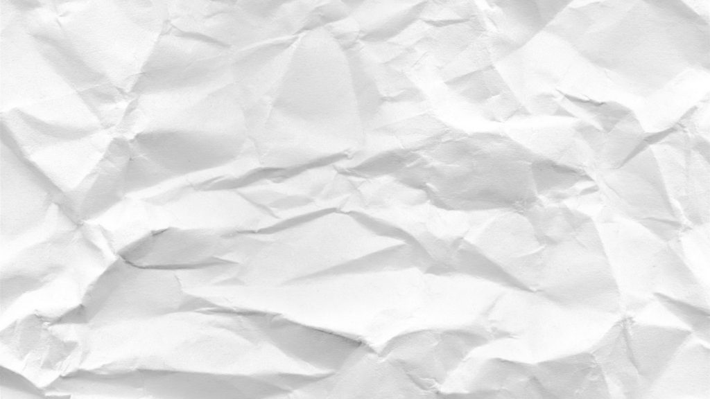
Bruges på undersiderne som baggrund på teksten og til andre end Vibes kommentarer
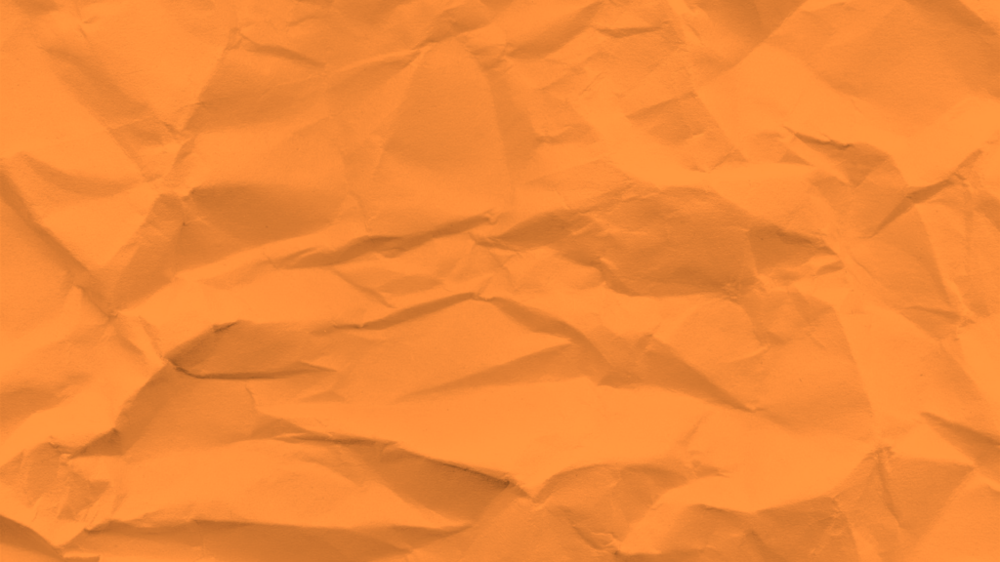
Bruges til Brevkassen og Vibes kommentarer
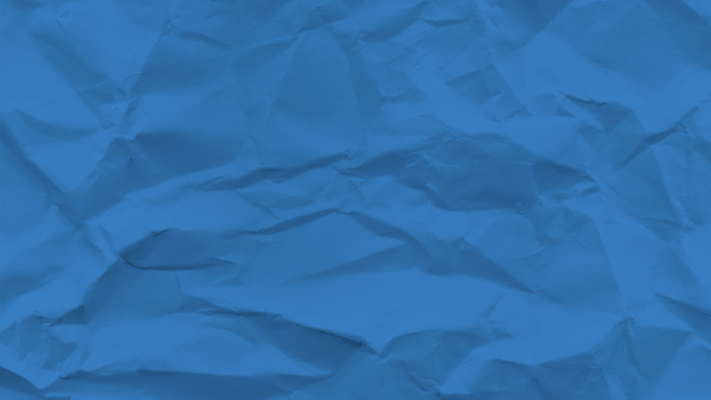
Bruges på kontaktformularer
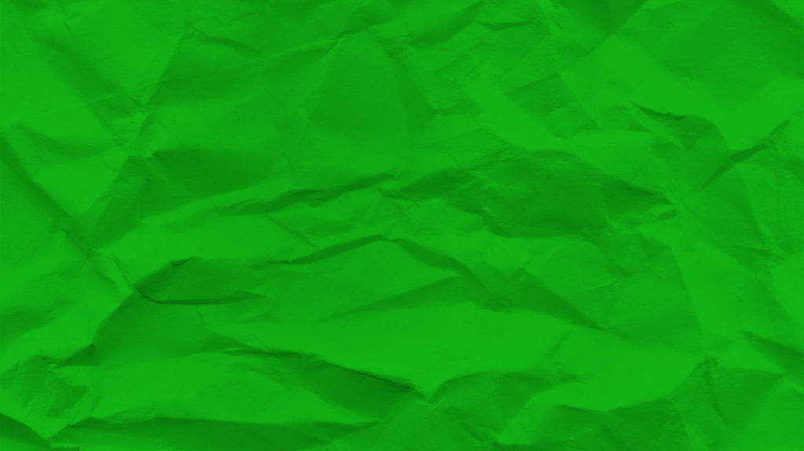
Bruges på kontaktformularer
Baggrundsbillede
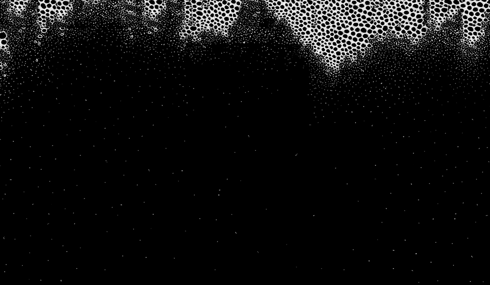
Baggrundsbilledet bruges på alle sider.
Cirkel-element
Brevkasse
Om autisme
Tegn på autisme
Cirkel-elementet bruges til tekst, som er sat op, som lister der skal fremhæves.
Elementet bruges også i menuen immelem hvert menupunkt.
Kode
:before {
color:#d4282c;
content: "◦";
font-family: Arial,Helvetica, Sans-serif;
font-weight: bold !important;
text-align: left;
margin-right: 0.5em;
}
Pil
Pilen bruges i Til forældre og Om autisme i Q&A, da siderne er meget lange. Da elementet er hvidt, skal det kun bruges på en mørk baggrund.
Ikoner
Hvor sidder autismen henne?
Hvad menes der med kommunikation?
Støtte og hjælp
Egne kammerater
Ikonerne bruges i Til forældre og Om autisme i Q&A på nogle af svarene. De er jævnt fordelt, så det skaber balance i designet.
Ikoner kan findes på https://fontawesome.com/icons?d=gallery
Billedestil
 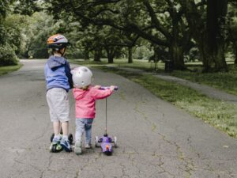
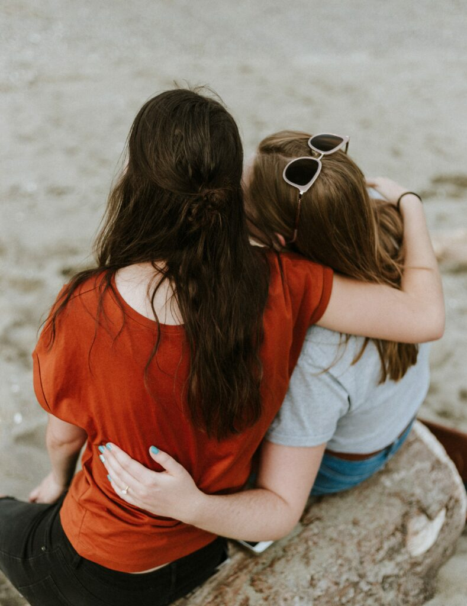
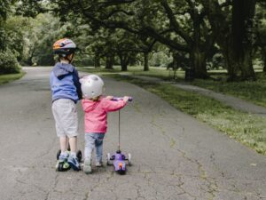
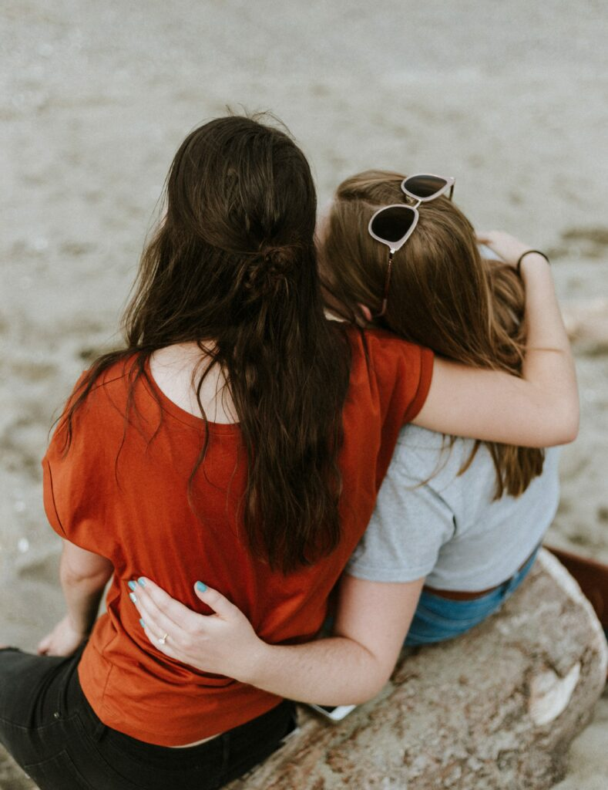
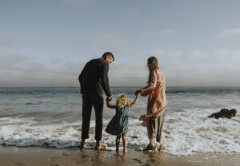
Billederne skal have elementer/situationer, som brugerne kan identificere sig med. Billeder hvor folk kigger direkte ind i kameraet, skal så vidt som muligt undgås, med undtagelse af billeder af fagfolk, som skal signalere tillid.
Alle billederne har en opacity på 0.90
Billeder kan findes på https://unsplash.com/ og https://pixabay.com/
Kontaktformular
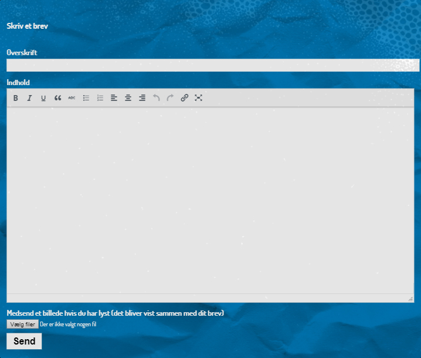
Der bruges forskellige variationer af denne kontaktformular alt efter formål. Formularen bruges på Skriv et brev, Billeder, Kontakt os og på brevene hvor man kan skrive en kommentar.
Kode
[fu-upload-form form_layout="post_media" class="my-class validate" append_to_post="true" success_page="http://www.autizme.cfait.support/faa-gode-raad/" category="5" title="Skriv et brev"]
[input type="text" name="post_title" id="title" class="required" description="Overskrift"]
[textarea name="post_content" class="textarea" id="my-textarea" description="Indhold" class="required"]
[input type="file" name="photo" id="my-photo-submission" description="Medsend et billede hvis du har lyst (det bliver vist sammen med dit brev)" multiple="multiple"]
[input type="submit" class="btn" value="Send"]
[/fu-upload-form]
Plugins
Black Studio TinyMCE Widget: gør det visuelt nemt at opsætte pages og posts
Page Builder by SiteOrigin: gør det visuelt nemt at opbygge pages
Page Builder by SiteOrigin: gør det visuelt nemt at opbygge pages
SiteOrigin Widgets Pakke: er en samling af widgets, der bruges til at opbygge pages
The Post Grid: bruges til at lave grids til breve
Contact Form 7: bruges til diverse kontaktformularer
Footer Putter: der er ingen footer i dette WordPress theme, så denne plugin bruges
Frontend Uploader: bruges i Billeder til at uploade billeder
HD Quiz: bruges til at lave autizme quiz
Robo Gallery: bruges til Billeder, som et galleri
WPFront Scroll Top: bruges på Til forældre og Om autisme. Gør at man kan scrolle til toppen af en side hurtigt
Duplicate Page: duplikere hurtigt den valgte side
Duplicator: backup/flyt WordPress siden nemt
Simple Lightbox: bruges ikke
Easy FancyBox: bruges ikke
Easy Smooth Scroll Links: bruges ikke
facebook wall and social integration: bruges ikke
Hide Title: bruges ikke (virker ikke pt.)
Notification: bruges ikke
Sticky Menu (or Anything!) on Scroll: bruges ikke
Basic Page
This index.html page is a placeholder with the CSS, font and favicon. It's just waiting for you to add some content! If you need some help hit up the Skeleton documentation.